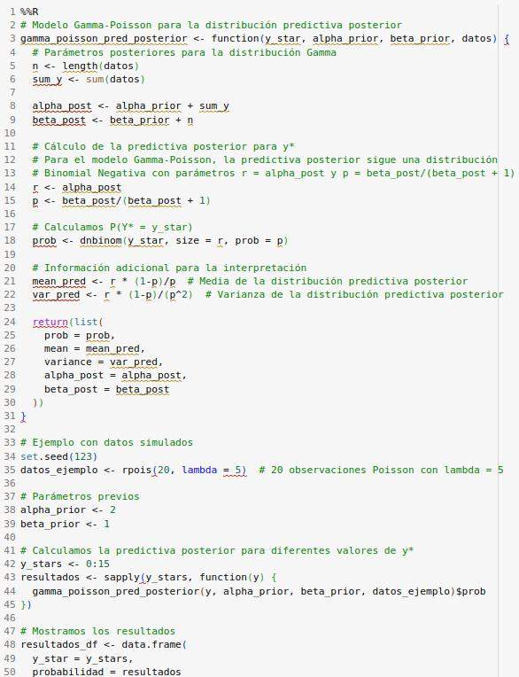
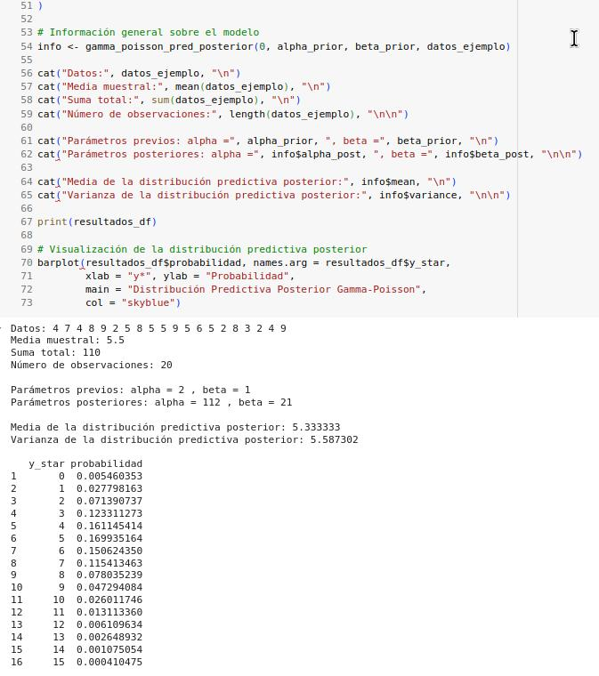
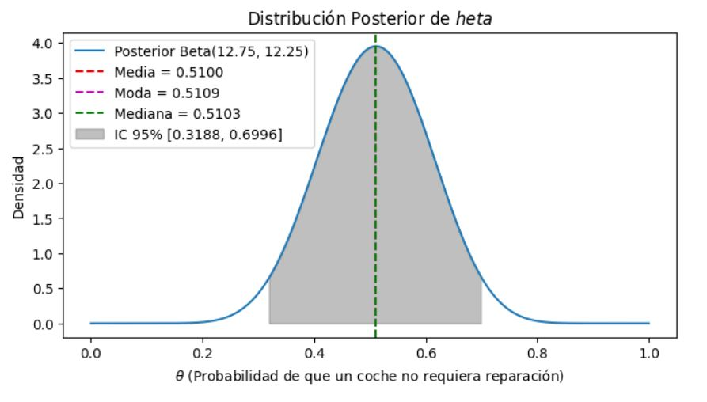

Un determinado medio de comunicación desea llevar a cabo un estudio para saber cuál es el interés que despierta
entre sus lectores las noticias relacionadas directamente con conflictos bélicos. Para ello contabilizará el
número de visitas en su canal de comunicación online. El número de visitas sigue una distribución Poisson(𝜃).
El estudio se realizó durante 10 meses y el número medio de visitas mensuales fueron las siguientes:
Se desea contrastar:
320, 360,950, 400, 370, 75, 725, 120, 380, 375.
𝐻0: 𝜃=340
𝐻1: 𝜃 = 450
Previa no informativa 𝑝(𝐻0) = 𝑝(𝐻1) = 0′5.
Conslusiones de nuestro resultado:
Media muestral: 407.5
La media de las observaciones (407.5) esta mas cerca del valor propuesto en H₁ (θ = 450) que del valor en H₀ (θ
= 340), lo que ya nos da una primera pista de que H₁ podría tener mayor respaldo.
Log Factor de Bayes (log B10): 42.23051
El logaritmo del factor de Bayes es positivo y muy grande, indicando fuerte evidencia a favor de H1.
Factor de Bayes (B10): 2.190146e+18
Según la escala de Kass y Raftery, cualquier valor mayor a 150 se considera evidencia "muy fuerte" a favor de la
hipótesis alternativa.
Este factor tan elevado indica que los datos observados son 2.19 quintillones de veces mas probables bajo la
hipótesis H₁ que bajo H₀.
Probabilidad a posteriori de H0: 4.565869e-19
Esta probabilidad es prácticamente cero.
Probabilidad a posteriori de H1: 1
Esto indica que, después de considerar los datos, la probabilidad de que H₁ sea cierta es prácticamente 1 (o
100%).
Conclusión: Hay una evidencia abrumadora para rechazar H₀ (θ = 340) y aceptar H₁ (θ = 450). Los
datos de visitas observados apoyan fuertemente la hipótesis de que el parámetro θ de la distribución Poisson es
450 y no 340.
Este resultado es consistente con los datos observados, que incluyen valores altos como 950 y 725, los cuales son
mas probables si θ = 450 que si θ = 340. La combinación de todos los datos proporciona una evidencia estadística
muy fuerte a favor de la hipótesis alternativa.
Actividad 2
Un grupo de expertos sobre el Cambio Climático investigan sobre el calentamiento global. Disponen de i = 1, … . ,
20 observaciones que se distribuyen 𝑦𝑖|𝜃~N(20, σ2). Los expertos están interesados en realizar el siguiente
test de hipótesis y no disponen de información previa respecto a las hipótesis:
Calcular la Distribución Predictiva Posterior del modelo Bernoulli-Beta (Binomial-Beta) para una observación
futura 𝑦∗ = 0.
NOTA: en clase hemos calculado la distribución predictiva posterior para 𝑦∗ = 1
Si queremos cuantificar nuestro estado de información acerca de una observación futura dado que ya tengo
observaciones acerca de la realidad que estamos estudiando, deberíamos obtener la distribución predictiva ya que
tiene por objetivo describir el comportamiento estocástico de una observación que no tuve la oportunidad de
observar, dado que ya observé una base de datos.
¿Cómo se escribe? y = y1, y2, ..., yn base de datos observados y* observación futura
yi siguen una Bernoulli con parámetro p. Prior de 𝑝:p ∼Beta(α,β)
Distribución posterior del parámetro 𝑝
Actividad 4
Calcula la Distribución Predictiva Posterior del Model Gamma-Poisson.
Es importante justificar cada cálculo.
Cógigo python



Justificación de los cálculos:
1. Actualización de parámetros:
Para una distribución Gamma previa con parámetros (α, β) y datos Poisson, la distribución posterior es Gamma con parámetros:
α_post = α_prior + Σy (suma de todas las observaciones)
β_post = β_prior + n (número de observaciones)
Esta actualización representa la combinación de la información previa con la información de los datos.
2. Distribución predictiva posterior:
Cuando integramos la verosimilitud Poisson(y*|θ) con la posterior Gamma(θ|α_post, β_post), obtenemos una distribución Binomial Negativa.
La fórmula es: P(y|datos) = ∫ P(y|θ) × P(θ|datos) dθ
Esto resulta en una Binomial Negativa con parámetros:
r = α_post
p = β_post / (β_post + 1)
3. Propiedades de la predictiva posterior:
Media: α_post / β_post (la misma que la media de la posterior de θ)
Varianza: α_post(β_post + 1) / β_post² (mayor que la varianza de la posterior, reflejando la incertidumbre adicional de predecir un nuevo valor)
Esta implementación proporciona no solo las probabilidades para diferentes valores de y*, sino también información sobre la distribución predictiva posterior completa, lo que ayuda a entender mejor el comportamiento esperado de futuras observaciones.
Actividad 5
Pregunta teórica:
Explica brevemente las principales diferencias entre las pruebas de hipótesis bajo un enfoque frecuentista y uno
bayesiano.
Las pruebas de hipótesis frecuentistas y bayesianas representan dos enfoques fundamentalmente distintos para
evaluar evidencia estadística:
Diferencias entre pruebas de hipótesis frecuentistas y bayesianas
Las pruebas de hipótesis frecuentistas y bayesianas representan dos enfoques fundamentalmente distintos para
evaluar evidencia estadística:
Enfoque frecuentista
Interpretación de probabilidad: Se basa en la frecuencia relativa a largo plazo de eventos en
experimentos repetidos.
Hipótesis fijas, datos aleatorios: Considera los parámetros como valores fijos desconocidos,
y los datos como aleatorios.
Valor p: Calcula la probabilidad de obtener datos tan o más extremos que los observados,
asumiendo que la hipótesis nula es cierta: P(datos|H₀).
Decisión binaria: Típicamente resulta en rechazar o no rechazar la hipótesis nula basándose
en un umbral predefinido (p < 0.05).
Información previa: No incorpora formalmente conocimiento previo o creencias sobre los
parámetros.
Enfoque bayesiano
Interpretación de probabilidad: Representa el grado de creencia o estado de conocimiento
sobre una hipótesis.
Datos fijos, hipótesis aleatorias: Una vez observados los datos, calcula probabilidades sobre
las hipótesis.
Probabilidad posterior: Calcula directamente la probabilidad de la hipótesis dados los datos:
P(H | datos).
Medición de evidencia: Utiliza factores de Bayes o probabilidades posteriores para
cuantificar la evidencia relativa entre hipótesis.
Información previa: Incorpora explícitamente el conocimiento o creencias previas a través de
distribuciones a priori.
Diferencias clave
El enfoque frecuentista responde “¿Cuán probable son estos datos si la hipótesis nula es cierta?”, mientras
que el bayesiano responde “¿Cuán probable es esta hipótesis dados los datos observados?”
El bayesiano permite actualizar continuamente el conocimiento a medida que llegan nuevos datos, mientras que
el frecuentista trata cada prueba como un evento independiente.
El enfoque bayesiano cuantifica directamente la incertidumbre sobre los parámetros y evalúa hipótesis de
manera probabilística, en lugar de ofrecer decisiones binarias.
Los métodos bayesianos integran información previa, lo que puede ser una ventaja cuando hay conocimiento
experto disponible, pero también introduce subjetividad en la elección de las distribuciones previas.